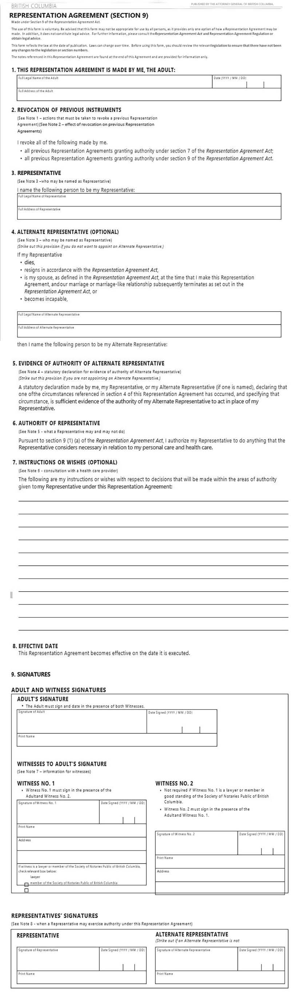

Choose Representative(s) to Advocate for You
Instead of leaving your health decisions up to B.C. Law, you can set who YOU
want as your Substitute Decision Maker (SDM). Again, this is only if you are incapable of making your own
decisions due to injury or illness. You can name your preferred SDM and even an alternate SDM by filling
out a form called Representative Section-9. (This applies to B.C. only, check your province or state for
a form that provides the same service). Click here to access my Representative Section-9 Wizard
and fill it out now.
Your Formal Substitute Decision Maker must follow the directives you have laid out in this Enhanced Representation Agreement should you become incapacitated. If you are only partially ‘incapable’ you can still make some decisions and these will be given priority.
There is no need to involve a Lawyer, Doctor or Notary Public as Representative 9 is legal as long as proper witnesses and signatures are made.
Personal decisions include where you live (examples are a hospital, home care, hospice etc.), your diet, clothing and hygiene and activities. It also includes decisions about who can have contact with you.
Health care decisions include tests, examinations, treatments and procedures related to your health such as surgery, medication and vaccines. It also gives permission for the Representative to make decisions about life support and life prolonging procedures. It does NOT include decisions related to financial or legal decisions. If you are still of sound mind, you will always be the first to make your own decisions. However, if not, the health care provider will adhere to your fully legal Section-9 Representative document.
These screen shots are for informational purposes only; so you can see what is asked of you when filling out this form. There are a number of forms created by different agencies including the Attorney General of B.C., the Dying with Dignity Association and Palliative Care B.C. (CHECK)

Your Formal Substitute Decision Maker must follow the directives you have laid out in this Enhanced Representation Agreement should you become incapacitated. If you are only partially ‘incapable’ you can still make some decisions and these will be given priority.
There is no need to involve a Lawyer, Doctor or Notary Public as Representative 9 is legal as long as proper witnesses and signatures are made.
Personal decisions include where you live (examples are a hospital, home care, hospice etc.), your diet, clothing and hygiene and activities. It also includes decisions about who can have contact with you.
Health care decisions include tests, examinations, treatments and procedures related to your health such as surgery, medication and vaccines. It also gives permission for the Representative to make decisions about life support and life prolonging procedures. It does NOT include decisions related to financial or legal decisions. If you are still of sound mind, you will always be the first to make your own decisions. However, if not, the health care provider will adhere to your fully legal Section-9 Representative document.
These screen shots are for informational purposes only; so you can see what is asked of you when filling out this form. There are a number of forms created by different agencies including the Attorney General of B.C., the Dying with Dignity Association and Palliative Care B.C. (CHECK)
At the top of the form (#57 Rep Agreement) (shown below) it states the caveats that read:
"Made under Section 9 of the Representation Agreement Act."
"The use of this form is voluntary. Be advised that this form may not be appropriate for use by all persons, as it provides only one option of how a Representation Agreement may be made. In addition, it does not constitute legal advice. For further information, please consult the Representation Agreement Act and Representation Agreement Regulation or obtain legal advice.
This form reflects the law at the date of publication. Laws can change over time. Before using this form, you should review the relevant legislation to ensure that there have not been any changes to the legislation or section numbers. The notes referenced in this Representation Agreement are found at the end of this Agreement and are provided for information only."
"Made under Section 9 of the Representation Agreement Act."
"The use of this form is voluntary. Be advised that this form may not be appropriate for use by all persons, as it provides only one option of how a Representation Agreement may be made. In addition, it does not constitute legal advice. For further information, please consult the Representation Agreement Act and Representation Agreement Regulation or obtain legal advice.
This form reflects the law at the date of publication. Laws can change over time. Before using this form, you should review the relevant legislation to ensure that there have not been any changes to the legislation or section numbers. The notes referenced in this Representation Agreement are found at the end of this Agreement and are provided for information only."
SECTION 1 is where you fill in your full legal name, full address and the current date.
SECTION 2 relates to any previous Representative Section-9 from you may have written.
If this is your first Rep-9, you can disregard this line.
SECTION 3 is where you fill in the full legal name and full address of your chosen Substitute Decision Maker, also
known simply as Representative.
SECTION 4 is where you fill in the full legal name and full address of your chosen Alternate Substitute Decision Maker, also
known simply as your Alternate Representative.
You can choose an Alternate Representative to ensure that you are still protected if your first Representative either dies or resigns
him or herself from the position or becomes 'incapable'. It is also to protect yourself should you divorce or separate from your Primary Representative.
SECTION 5 can be ignored if you have appointed an Alternate Representative. If you haven't you have to cross (X) this line out.
SECTION 6 states that you give permission for your Representative(s) to present and support your health care wishes to the medical community.
SECTION 7 allows you to write down specific wishes and requests related to your health care. For example if you are suffering
from a disease with no cure, you may want to write down your NO CPR directive. If you also fill out an Advanced Care Plan, you are
prompted to answer your wishes related to many of the common situations.
SECTION 8 simply time-stamps the agreement as of the date signed by you, your Representative(s) and your Witnesses.
SECTION 9 - ADULT'S SIGNATURE: is where you sign the form in front of your Witnesses. If you are being witnessed by a Lawyer or Notary Public, you
only need their one signature. Otherwise you need two Witnesses.
SECTION 9 - WITNESSES TO ADULT SIGNATURE: Signature is where you sign the form in front of your Witnesses.
If you are being witnessed by a Lawyer or Notary Public, you
only need their one signature. Otherwise you need two Witnesses.
SECTION 9 - REPRESENTATIVS SIGNATURES: is where you and your Representative(s) sign the form in front of your Witnesses.
If you are being witnessed by a Lawyer or Notary Public, you
only need their one signature. Otherwise you need two Witnesses.
Who Can Represent for You By Law?:
- They must be 19 years of age or older
- They can not provide personal care or health care services to you for compensation
- They can not be an employee at a facility where you reside such as a care home (unless they are related)
Some of the things to consider:
- Would they be accountable to you and the Health Care Personnel?
- Would they be able to exercise the duties set out for them?
- Would they act honestly and honorably on your behalf?
- Do they have good communication skills?
- Would they respect and abide by your wishes?
- Are they careful record keepers?
- Are they confident enough to accept sole authority for your care?
- Are they capable of also seeking advice from others?
- Can they keep all information confidential?
- Can they remain calm in a crisis?
- Are they ready and willing to take on the role?
- Do you trust them to make the proper decisions for you?
- Can they make difficult decisions?
Your Representative has the right to:
- Visit and talk to you as needed with open communication
- The same medical information you would have access to
- Ask all reasonable questions about your health and prognosis
- Be paid for out-of-pocket expenses related to your care (keep receipts)
- Hire help and support to help them carry out your written requests
- Be protected from liability for any errors or damages that occur
- Resign from the role at any time
- Request compassionate leave from work to care for you
Your Representative has a Duty to:
- Consider whether your health is likely to be improved by a treatment or not
- Consider if your well-being will be improved by a proposed treatment
- Consider if the proposed treatment’s benefits outweigh the risks
- Investigate whether a less intrusive treatment may be as helpful
- Resist being pressured into agreeing to any treatment you would not want
- Review your wishes (ex. once a year) or as your health changes
- Allow you say should you still have the capability to make partial decisions
- Follow your wishes no matter how they feel about them
- Ensure that they have access to all your health records, prescriptions etc.
- Has all advanced care documents: Rep-9, Rep-7, Advanced Directives
Your Representative Can Not:
- Make some decisions related to your mental health
- Authorize removal of organs
- Allow for experimental health care practices
- Authorize abortions or sterilization
- Take over care and education of your underage (less than 19) children or other dependents
- Allow for methods that interfere with your religious beliefs
- Make changes to your Will
The following persons may not be a Witness:
Check below to make sure the witnesses you have chosen meet the criteria set out by law. You will need to
obtain two witnesses unless you employ a lawyer or Notary Public in which case only 1 signature is needed. The witnesses
must be on hand to watch you and your Representative(s) sign before they sign.
- A person who provides personal care, health care or financial services to the Adult for compensation, other than a lawyer or notary public
- A spouse, child, parent, employee
- A person who is under 19 years of age
- A person who does not understand the type of communication used by the Adult if no interpreter is employed
This document should be kept with your will, and a copy should be given to the Representative you choose, the alternate if you choose,
to have one. You can also leave a copy with your family doctor. Let your family, specifically your Representatives know where you have
placed all your important documents. I personally have all of my documents, including the financial information in a fire-proof safe.
Paramedics know to look for any kind of directive on or in your fridge or freezer.
Creating an Advanced Care Plan
By creating an Advanced Care Directive, you can state specifically which treatments and procedures you want
your Representative to advocate for you. It provides another vehicle to letting them know what your wishes are.
Your directive will be followed by the Health Care team as it relates directly to the situation at hand.
If your Advance Directive doesn't include a proposed health care treatment then the person appointed as your Formal Substitute Decision Maker will be asked to make the decisions.
This means for example, if you don’t want to be intubated and it says so in your Directive you will not be. If your Directive doesn’t mention being intubated then the decision will be made by your Representative. If you don’t have a Representative, the decision will be made by the Health Care team.
If you are concerned that your wishes may not be followed by your Representative, you will need to state in the Advance Directive that your Health Care providers may act in accordance with your instructions without the consent of your Representative. You can even name the procedures you would like attempted as well as the treatments you would not want.
Life support and medical interventions include:
If your Advance Directive doesn't include a proposed health care treatment then the person appointed as your Formal Substitute Decision Maker will be asked to make the decisions.
This means for example, if you don’t want to be intubated and it says so in your Directive you will not be. If your Directive doesn’t mention being intubated then the decision will be made by your Representative. If you don’t have a Representative, the decision will be made by the Health Care team.
If you are concerned that your wishes may not be followed by your Representative, you will need to state in the Advance Directive that your Health Care providers may act in accordance with your instructions without the consent of your Representative. You can even name the procedures you would like attempted as well as the treatments you would not want.
Life support and medical interventions include:
- Tube Feedings
- Ventilators
- Kidney Dialysis
- Medications
- CPR (Cardio Pulmonary Resuscitation)
- Intubation
- Breathing Machines?
Why Write an Advanced Directive?
- You want to be in charge of your own health, life and death
- Your realize that doing so now could lead to less family conflicts later
- You want consistency in who cares for you
- You want to eliminate added stress for your family
If you are the kind of person who would like anything and everything done in order to stay alive, you also need to
put that in writing. You may want to know every detail about every thing they put in your body, you too need to put
that in writing. Life never goes according to schedule and in emergencies and in life, mistakes happen, papers get mislaid
and the requests you have written down may not be able to be followed.
Still the Advanced Directive can help you to really think about a future scenario. Do you want to know nothing, everything or somewhere in between? Would you want to be told if your doctors know that you will soon be facing death or would you rather hang on to not knowing? Would you accept any and all medications even if they make you too drowsy to communicate with your family. Or would you rather suffer some pain in order to still maintain some awareness and cognition. Would you be willing to try different types of alternative medical interventions? Or would you absolutely not want anything outside the medically approved box? And would you like to die in a hospital, a hospice, a care home or in your own home?
Are you the type of person who wants family all around you or do you find being alone or perhaps with just one other family member to be sufficient? If the latter is the case, should you consider writing down who you absolutely do NOT want at your bedside? Do you want to keep your diagnosis a secret or something only you and your spouse know about or would you want everyone to know so that they could offer their support? Perhaps you would want to name one family member to be your number 1 go-to person (besides your Reps) so that family bickering is kept to a minimum?
Perhaps you have never followed a religion but would still like religion to figure prominently in your death and funeral. Or on the opposite side, you may vehemently be opposed to having any kind of religious ceremony or funeral performed. Think about the setting - as mentioned above, but within whatever setting you end up in, do you want music, do you want grand-children in the room, do you want to be able to see the outdoors, are their smells that are offensive to you, what flowers do you loathe, are their any hospital staff who are upsetting you, what kind of physical touch do you like? Would you feel safe enough to talk about the visions you might be seeing - in other words you have a right to determine so many of these things that bring you comfort but you would be wise to write ... them ... down.
Still the Advanced Directive can help you to really think about a future scenario. Do you want to know nothing, everything or somewhere in between? Would you want to be told if your doctors know that you will soon be facing death or would you rather hang on to not knowing? Would you accept any and all medications even if they make you too drowsy to communicate with your family. Or would you rather suffer some pain in order to still maintain some awareness and cognition. Would you be willing to try different types of alternative medical interventions? Or would you absolutely not want anything outside the medically approved box? And would you like to die in a hospital, a hospice, a care home or in your own home?
Are you the type of person who wants family all around you or do you find being alone or perhaps with just one other family member to be sufficient? If the latter is the case, should you consider writing down who you absolutely do NOT want at your bedside? Do you want to keep your diagnosis a secret or something only you and your spouse know about or would you want everyone to know so that they could offer their support? Perhaps you would want to name one family member to be your number 1 go-to person (besides your Reps) so that family bickering is kept to a minimum?
Perhaps you have never followed a religion but would still like religion to figure prominently in your death and funeral. Or on the opposite side, you may vehemently be opposed to having any kind of religious ceremony or funeral performed. Think about the setting - as mentioned above, but within whatever setting you end up in, do you want music, do you want grand-children in the room, do you want to be able to see the outdoors, are their smells that are offensive to you, what flowers do you loathe, are their any hospital staff who are upsetting you, what kind of physical touch do you like? Would you feel safe enough to talk about the visions you might be seeing - in other words you have a right to determine so many of these things that bring you comfort but you would be wise to write ... them ... down.
Questions for Your Doctor
- What stage is my health condition at?
- How might my condition progress?
- Can my condition affect my memory or ability to think for myself?
- Will my condition become life threatening?
- What life support or prolonging medical interventions might I need?
- What does my doctor suggest I address in my Advanced Care Plan?
- Should I accept or refuse CPR at my age?
- Will medical interventions affect my everyday enjoyment of life as it is now?
- Will interventions or treatments affect my mobility or my mental state?
- Can I have a trial period of life prolonging medical interventions?
- If there is no improvement, can I seek a natural death?
- Do I have a right to accept or refuse life prolonging procedures?
About CPR
You can choose to receive CPR or be put on a ventilator if your heart or breathing stops.
Being put on a ventilator is sometimes referred to as "being put on life support." CPR doesn't always work to
resuscitate people, or "bring them back. And the older and sicker you are, the less likely it is to work.
Here are some of the issues to consider:
Your Options for Accepting or Refusing CPR
- Pressing on the chest during CPR often breaks the person's ribs.
- People who do survive after their heart has stopped may have brain damage.
- This can affect your ability to talk, recognize loved ones, dress yourself, or manage your bathroom needs.
- With CPR and life support, you may live longer than you would without life support.
- But your remaining time may be spent in a hospital connected to machines.
- If CPR does "bring you back," you will still have your chronic illness plus the new problems that led to your needing CPR in the first place
If you don't make your wishes known, your doctor and loved ones may face some tough decisions. In an emergency, you would probably receive CPR. Then you
could be placed on life support, even if you didn't want it. Your doctor and family may have a hard time deciding how to continue your medical care.
Also, it may be very hard for your loved ones to decide when to stop life support.
This No CPR form is shown below for your interest. It states: "Capable patients may request that no cardiopulmonary resuscitation be started on their behalf. This should be done after discussions
with their doctor or nurse practitioner. No "cardiopulmonary resuscitation" is defined as no cardiopulmonary resuscitation (no CPR)
in the event of a respiratory and/or cardiac arrest.
"Capable patients may request that no cardiopulmonary resuscitation be started on their behalf. This should be done after discussions
with their doctor or nurse practitioner. No "cardiopulmonary resuscitation" is defined as no cardiopulmonary resuscitation (no CPR)
in the event of a respiratory and/or cardiac arrest.
This form is provided to you or your Substitute Decision Maker (Representative Section-9) to acknowledge that you have had a conversation with a doctor or a nurse practitioner about a No CPR Order, and understand that no CPR will be provided in circumstances where you can no longer make decisions for yourself. It instructs people such as first responders, paramedics and health care providers not to start CPR on your behalf whether you are at home, in the community or in a residential care facility. The personal information collected on this form assists the health professionals noted above to carry out your wishes."
This form must be signed by you if you are still capable or by your Representative(s) if you are no longer capable. It must also be signed by your Doctor or Nurse Practitioner who are agreeing to the order after having had a conversation with either you or your Representatives.
If you wish to download the form you can do so here at: No CPR Request Form. To order a free Medic Alert® - No CPR bracelet or 'necklet' you also need to download and complete this form: No CPR Bracelet.
This No CPR form is shown below for your interest. It states:
"Capable patients may request that no cardiopulmonary resuscitation be started on their behalf. This should be done after discussions
with their doctor or nurse practitioner. No "cardiopulmonary resuscitation" is defined as no cardiopulmonary resuscitation (no CPR)
in the event of a respiratory and/or cardiac arrest.
This form is provided to you or your Substitute Decision Maker (Representative Section-9) to acknowledge that you have had a conversation with a doctor or a nurse practitioner about a No CPR Order, and understand that no CPR will be provided in circumstances where you can no longer make decisions for yourself. It instructs people such as first responders, paramedics and health care providers not to start CPR on your behalf whether you are at home, in the community or in a residential care facility. The personal information collected on this form assists the health professionals noted above to carry out your wishes."
This form must be signed by you if you are still capable or by your Representative(s) if you are no longer capable. It must also be signed by your Doctor or Nurse Practitioner who are agreeing to the order after having had a conversation with either you or your Representatives.
If you wish to download the form you can do so here at: No CPR Request Form. To order a free Medic Alert® - No CPR bracelet or 'necklet' you also need to download and complete this form: No CPR Bracelet.
EDITH - Expected Death in the Home
You have the choice to die at home if the request is a reasonable one, if your family supports it and if approved by your Doctor.
You must have completed the No CPR form in order to pursue this avenue. The EDITH Form is shown here for your information.

"This form allows a Funeral Director to remove your body from a home without pronouncement of death. Pronouncement of death is
not required by BC Law, although it is widely recognized that pronouncement is sound clinical and ethical practice for nurses and
physicians."
"There may be circumstances when pronouncement is difficult or families choose to waive pronouncement. If a person dies in British Columbia, the death must be registered with the Vital Statistics Agency. A Medical Certificate of Death form is completed by the physician within 48 hours after a death. The medical certificate of death is forwarded to the funeral director who will register the death. The funeral director can then issue a death certificate and burial permit."
You can download the A Notification of an Expected Death in the Home form here. It must be completed by the your physician or a nurse practitioner and then sent to the funeral home before your death.
"There may be circumstances when pronouncement is difficult or families choose to waive pronouncement. If a person dies in British Columbia, the death must be registered with the Vital Statistics Agency. A Medical Certificate of Death form is completed by the physician within 48 hours after a death. The medical certificate of death is forwarded to the funeral director who will register the death. The funeral director can then issue a death certificate and burial permit."
You can download the A Notification of an Expected Death in the Home form here. It must be completed by the your physician or a nurse practitioner and then sent to the funeral home before your death.